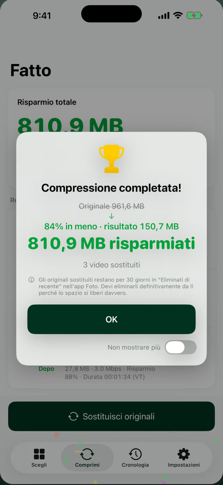
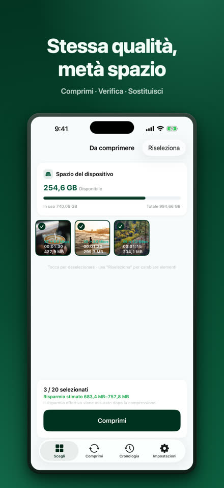
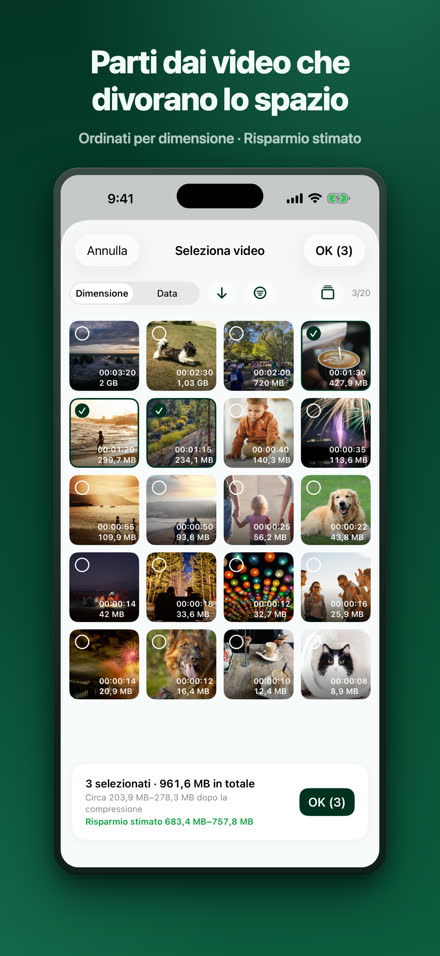
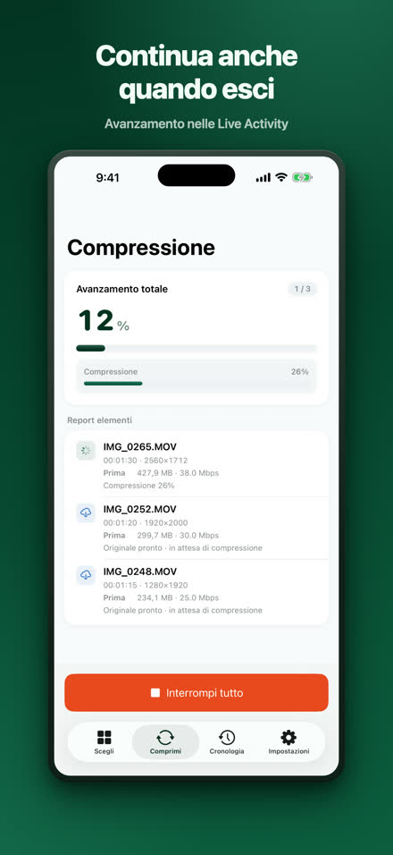
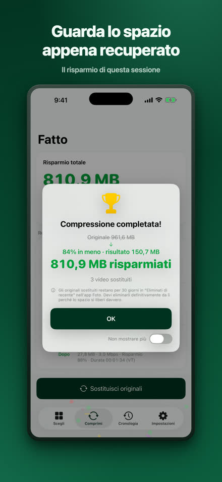
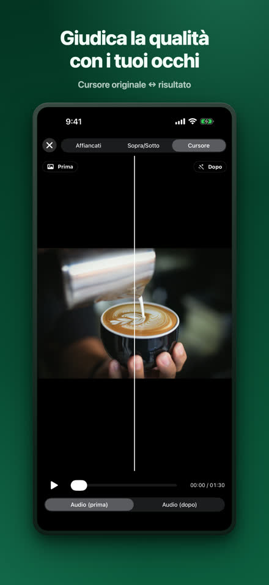
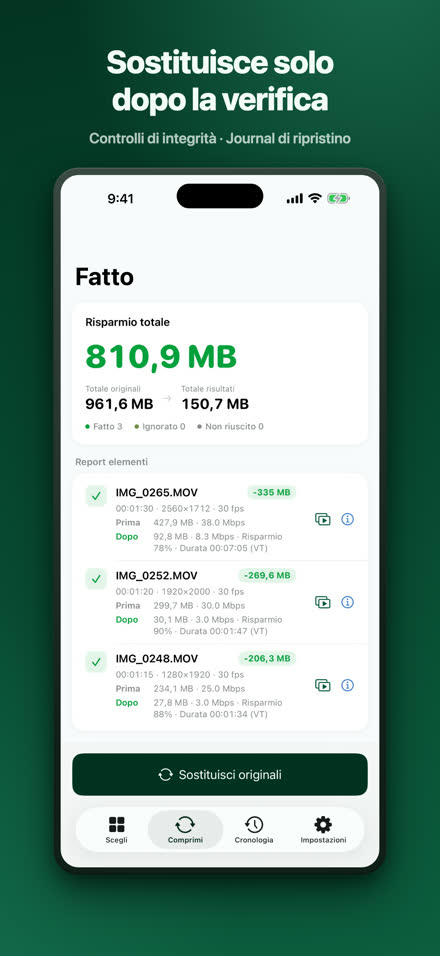
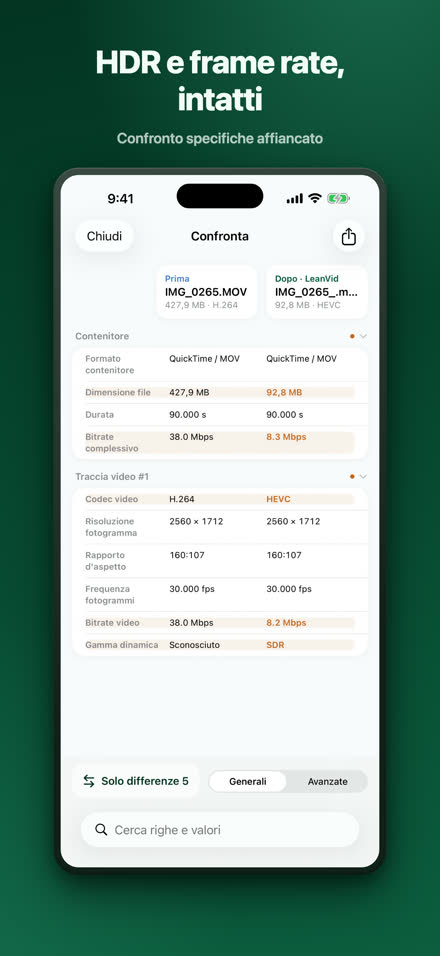
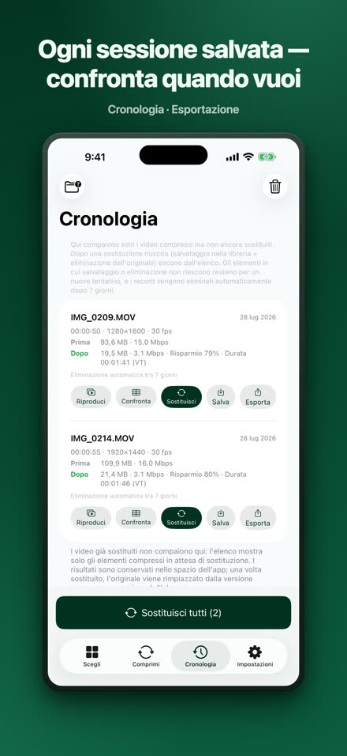

Riduci i video, mantieni la qualità.
LeanVid comprime i video della libreria foto e dell’app File abbassando solo il bitrate — risoluzione, frequenza dei fotogrammi, colore e HDR restano intatti. Ogni risultato viene verificato prima di sostituire l’originale, e gli originali della libreria foto restano recuperabili per 30 giorni.
Scarica su App StoreiOS 18 o versioni successive · iPhone e iPad (funziona anche su Mac con Apple silicon come app per iPad)

Lo stesso video, in una frazione dello spazio.
Nostro test: una registrazione dello schermo di 3 min 34 s. Il risultato varia da video a video.
Scegli, comprimi, controlla, sostituisci.








Tutto quello che serve, già dentro.
solo il bitrate, HDR e ogni traccia preservati
controlli di integrità, journal di recupero, conferma di sistema
confronto affiancato e con cursore, tabella completa delle specifiche
scegli i video da Su iPhone o iCloud Drive; i file MKV, WebM, AVI, WMV, FLV, TS, MPG e VOB vengono convertiti in HEVC/MP4 sul dispositivo
compressione in background con avanzamento tramite Live Activity (da iOS 26 in poi); sulle versioni precedenti riprende automaticamente quando torni
i tuoi video vengono compressi sul tuo iPhone e non vengono mai caricati; nessun account richiesto — Privacy